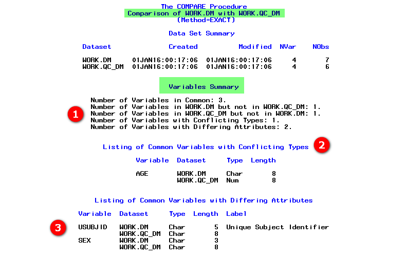
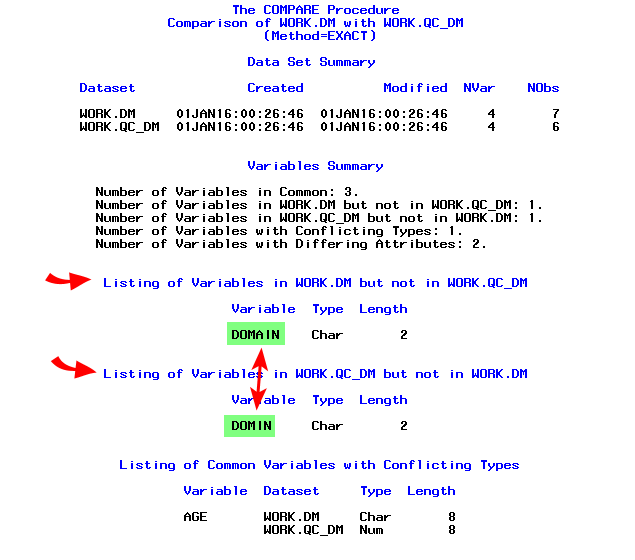
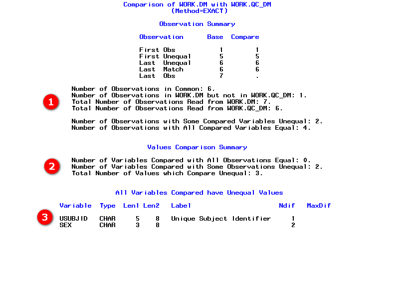
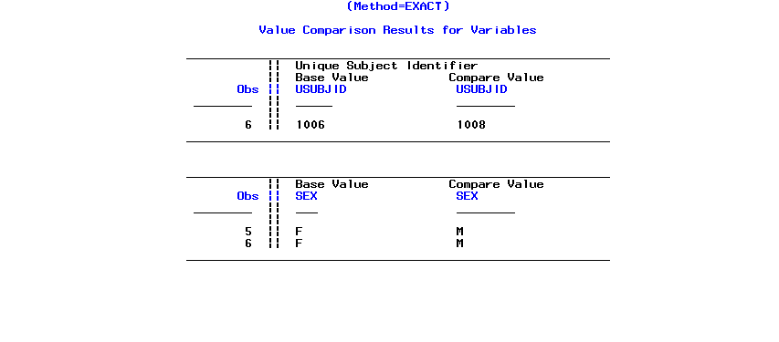
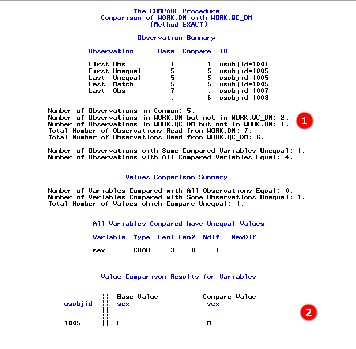
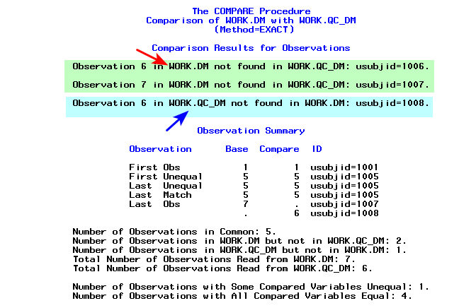

The word meaning of 'compare' is 'estimate, measure, or note the similarity or dissimilarity between entities.'
In Clinical SAS programming, we must compare two independent versions of the datasets for quality control purposes
What can differ between two datasets
Names of the datasets
Date/time of creation
Date/time of modification
Number of variables in the datasets
Number of observations in the datasets
Number of variables could be same but the names could differ
Number of variables and their names could also be same - but have different data type
Number of variables and their names could be same - but attributes like label, length, format, informat could differ
Number of observations could be same - but the values may not be same (eg: could be of different subjects altogether)
Some observations could be common based on key identifier variables but values differ on other variables
How do we check (compare) any differences between two datasets?
Answer is our compare procedure
It can be used to compare two different datasets - with one dataset called base dataset, and other called the compare dataset
It gives a comparison report in three levels. 1) Dataset summary 2) Variables summary 3) Observation summary
In dataset level summary: - it gives the names of base and compare datasets - creation time - modified time - number of variables and - number of observations
In variables summary: - it gives the number of common variables - lists the variables which are exclusive to either of the datasets - lists the variables which share same name but differing data type - lists the differences in attributes of the variables
Lets understand 'variable summary' section
Create sample data
SAS Log
Examine the default output produced
We need to specify the name of the first dataset using base= option on compare statement
We need to specify the name of the second dataset using compare= option on compare statement
We get the compare output by default in output window or results viewer window
Expand the variable summary screenshot section to see the annotated compare output
In the below code, we are also exporting the metadata using proc contents for both the datasets into two separate datasets
SAS Log
Default variable summary screenshot

Dataset View
What if we want to see the list of variables which are not common?
We have an option called listvar on compare statement
This option tells the procedure to display the names of the variables which are exclusive to either of the domains
SAS Log
List of not common variables screenshot

Lets understand observation summary section
We have seen above that the variables between two datasets can be - common name and data type - common name and different data type - common name, data type but differing attributes - exclusively present only in one of the datasets
It is also possible that the number of observations between two datasets are different
Comparison of observations occurs based on observation position in each dataset - first observation of base dataset will be compared with first observation of compare dataset - second observation of base dataset will be compared with second observation of compare dataset - and so on till the end
How is each observation compared? - we know that each observation is a combination of values present in all variables on that row - values present in each variable on an observation is compared and reported if there is a mismatch
When the number of observations differ, the comparison happens only till the highest observation number in the dataset with lesser number of observations.
For example, if base dataset has 10 observations and compare dataset has 8 observations - value comparison on variables occur only till 8 observations of base dataset
Only those variables that have same name and data type between the two datasets will be compared
Mismatches in variables on observations are listed in a section called 'Value Comparison Summary for Variables'
SAS Log
Default observation summary screenshot

Value Comparison Summary screenshot

What if we want to compare the observations based on matching values in some variables?
We can do that using id statement
We can specify a list of variables on the id statement
Instead of comparing based on observation position, now observation from base dataset will be compared with the observation having same values on id variables in compare dataset
If USUBJID is listed as an id variable - record with 1001 in USUBJID in base dataset will be compared with record having a value of 1001 in USUBJID in compare dataset
Both base and compare datasets should be sorted by the variables specified on id statement
Number of observations with matching id values in both the datasets will be displayed in the observation summary section
Number of observations which are exclusive to either base or compare dataset will also be displayed
SAS Log
Dataset View
Value Comparison Summary screenshot
Value Comparison Summary with ID statement

What if we want to see the observations which do not have a matching record in either base or compare dataset?
We can make use of listall option on proc compare statement
One feature of Listall option is to display the observations which do not have a in between base and compare datasets
SAS Log
List of observations which are not common to both datasets

Dataset View
How does/should a clean compare look like?
Fix the issues in input datasets used so far - for demonstration - creating the same data with different names
SAS Log
Run compare with listall option and using id statement
Number of variables should match
Number of observations should match
Number of observations common to both the datasets should match (because, the number of observations may be the same but differ on values in id variables)
All variables should be common to both the datasets
All variables should be of same data type
Attributes (length, label, format) of all variables should match
Values on all variables should match
Note that proc compare cannot identify the difference in order(position) of variables in the dataset